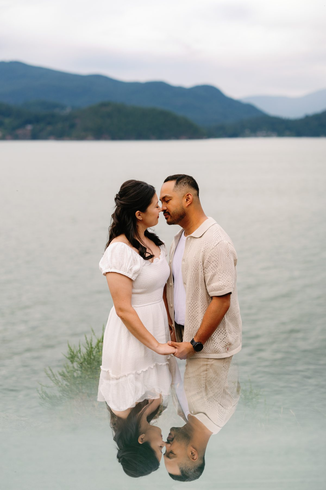
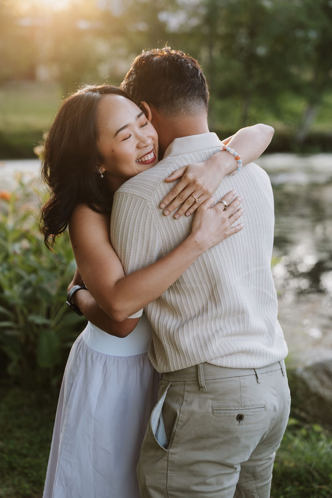
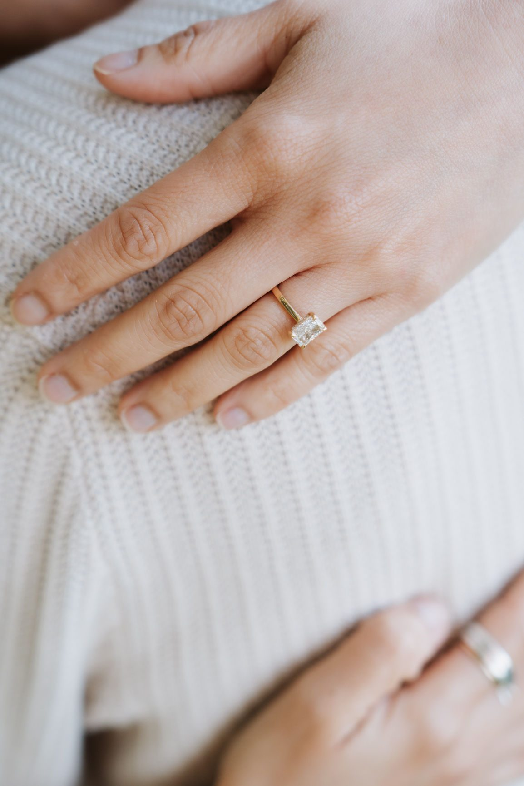
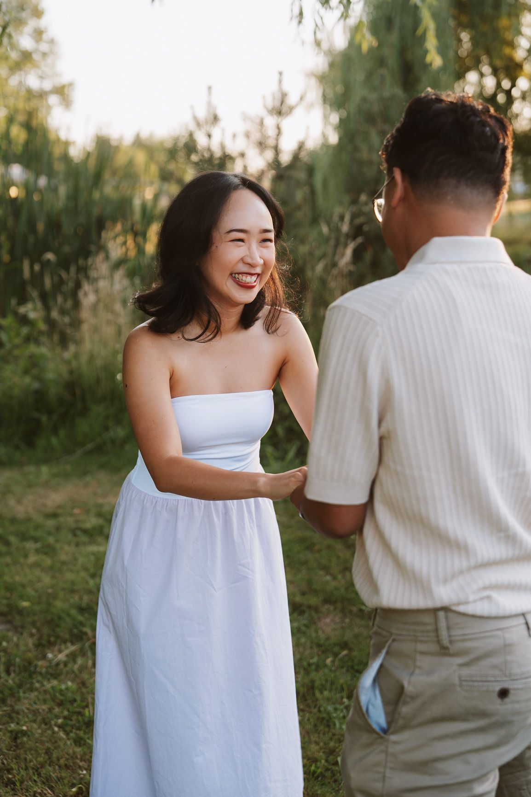

Something has shifted. In the last few years, the conversation around weddings has changed — and not just because of a pandemic. Couples are genuinely reconsidering what they want their wedding day to look like, and a lot of them are arriving at the same answer: smaller, more intentional, more us.
Elopements in Vancouver are on the rise, and if you're reading this, you're probably curious whether it makes sense for you. Here's an honest look at why couples are making the switch.

The average wedding in Canada costs somewhere between $30,000 and $40,000. In Vancouver, where venues are premium and catering costs climb fast, that number can easily hit $50,000 or more.

An elopement flips the math entirely. Instead of spending five figures on a venue you'll be in for six hours, you spend a fraction of that on an experience you'll remember forever. Some couples take what they would have spent on a wedding and put it toward a honeymoon, a down payment, or just... their actual lives.
We're not saying money is the only reason to elope. But it's a real one, and it's worth naming.

If you've ever tried to write a wedding guest list, you already know the problem. The moment you start, you're navigating family politics, plus-ones, and the guilt of leaving someone out. A 50-person list becomes 80. An 80-person list becomes 120.

With an elopement, you bypass all of it. Two people (or a small group of your closest people) show up, say what they mean, and that's it. No seating charts. No catering minimum. No one you barely know telling you how beautiful you look.
A lot of couples tell us the thing they loved most about their elopement was how present they felt. There was no crowd to perform for. It was just them.

This is the part that makes Vancouver different from almost every other city. Within an hour of downtown, you have old-growth forest, glacial lakes, rugged coastline, and mountain backdrops that most people travel internationally to photograph.
Stanley Park. Lighthouse Park. Bowen Island. Joffre Lakes. These aren't backup options — they're genuinely world-class locations. And because they're not traditional wedding venues, you're not paying venue rental fees to access them.

A good elopement photographer who knows Vancouver will help you build a day around the light, the season, and what you actually want. That's a very different experience from choosing a banquet hall from a venue list.
You don't need a big ceremony to have a legally recognized marriage in BC. You need a marriage licence (available from any ServiceBC location or many registry offices), a licensed officiant, and two witnesses. That's it.

The whole legal process takes about 20 minutes. What you do with the rest of the day is entirely up to you.
This is the thing we want to be clear about: choosing to elope is not settling. It's not what you do when you can't afford a real wedding, or when your family situation is complicated, or when you run out of time to plan.

It's a choice. A deliberate one. And for the right couple, it's a better day than the traditional version — more emotional, more present, more genuinely theirs.
We've photographed hundreds of weddings and elopements, and the ones where couples are most at ease, most themselves, most visibly in love? Almost always the elopements.

SimplyWed Studio photographs weddings and elopements throughout Vancouver, the Lower Mainland, and BC. We know these locations, we know the light, and we love showing up for couples who want their day to feel real.
Get in touch at simplywedstudio.com/contact.
SimplyWed Studio photographs elopements and intimate weddings throughout Vancouver, the Lower Mainland, and BC. Based in Vancouver.
← Back to the journal